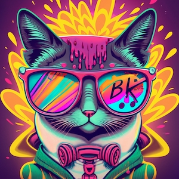
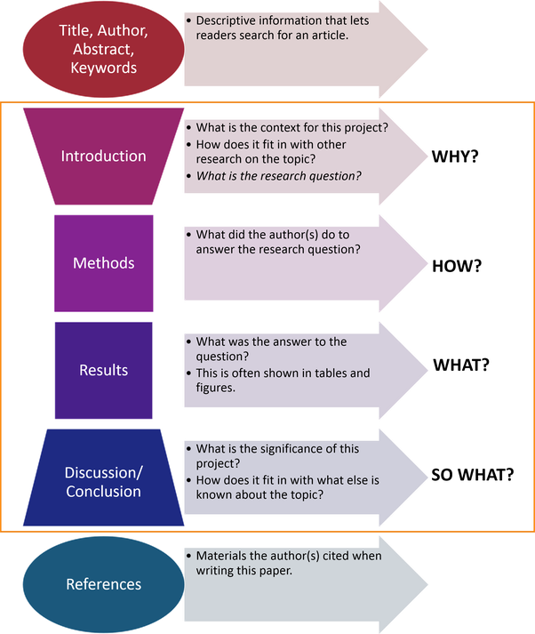

Werkboek Onderzoek

Voorwoord
Dit werkboek biedt ondersteuning bij bedrijfskundig onderzoek. Op deze pagina lichten we toe waarom onderzoek essentieel is voor de jou als bedrijfskundige professional, onze onderzoeksaanpak bij HAN BK, en wat we in het A-cluster gaan ondernemen.
Op de volgende pagina introduceren we diverse bedrijfskundige modellen waarmee een casusorganisatie geanalyseerd kan worden. We willen jou laten zien dat er voor elk onderwerp en vraagstuk relevante modellen beschikbaar zijn.
Bij de samenstelling van dit werkboek hebben we diverse media en activiteiten geïntegreerd, waaronder tekst, video, visuals, aanvullende wetenschappelijke bronnen en opdrachten. Dit werkboek is nog in ontwikkeling; gedurende het traject voegen we nog extra content toe.
-- Witek ten Hove / witektenhove@gmail.com
Waarom is onderzoek belangrijk voor BK?
Onderzoeksvaardigheden zijn cruciaal voor studenten Bedrijfskunde, omdat deze vaardigheden hen in staat stellen om gefundeerde beslissingen te nemen in complexe zakelijke omgevingen. Daniel Kahneman, Nobelprijswinnaar in de economie, introduceerde het concept van System 1 en System 2 Thinking. System 1 verwijst naar onze intuïtieve, snelle denkwijze die vaak gebaseerd is op aannames en vooroordelen. System 2 daarentegen is langzamer, beredeneerd en analytisch.

In de zakelijke wereld kunnen intuïtieve reacties (System 1) leiden tot overhaaste en ondoordachte beslissingen, met potentieel negatieve gevolgen. Onderzoeksvaardigheden stellen studenten Bedrijfskunde in staat om System 2-denken te bevorderen, waarbij ze zakelijke vraagstukken analyseren, data verzamelen en evalueren, en weloverwogen besluiten nemen.
Dit onderscheid in denkprocessen onderstreept het belang van een grondige analyse in het bedrijfsleven. Zonder degelijke onderzoeksvaardigheden riskeren studenten te vertrouwen op ongefundeerde aannames of oppervlakkige inzichten, wat kan leiden tot suboptimale bedrijfsstrategieën. Door de integratie van onderzoek in hun toolkit zijn studenten Bedrijfskunde beter uitgerust om leiderschap te tonen en waarde toe te voegen in een competitieve markt.
Er was ’s nachts een aanrijding met vluchtmisdrijf waarbij een taxi betrokken was. In de stad zijn er twee taxibedrijven, Groen en Blauw. Je krijgt de volgende gegevens:
- 85% van de taxi’s in de stad is Groen en 15% is Blauw.
- Een getuige beweerde dat de taxi Blauw was. De rechtbank heeft de betrouwbaarheid van de getuige onder de omstandigheden van die nacht getest, en geconcludeerd dat de getuige in 80% van de gevallen elke kleur correct identificeerde en in 20% van de gevallen een fout maakte.
Wat is de kans dat de taxi die bij het ongeluk betrokken was Blauw was in plaats van Groen?
Linda is 31 jaar oud, single, heeft een uitgesproken mening en is erg slim. Ze studeerde filosofie. Als student was ze actief betrokken bij verschillende protestbewegingen die streden voor meer sociale rechtvaardigheid.
Welk van de volgende uitspraken is waarschijnlijker?
Linda is een bankmedewerker.
Linda is een bankmedewerker en actief in de feministische beweging.
Hoe doen we onderzoek bij BK?
Onderzoek is een systematisch proces waarbij kennis wordt vergaard en uitgedragen. Hier is een beknopte uitleg van het onderzoeksproces aan de hand van de genoemde stappen:
Discovery: Deze initiële fase draait om het identificeren van een onderzoeksvraag of probleem. Hierin wordt voorafgaand onderzoek beoordeeld, een literatuurstudie gedaan en wordt de behoefte aan nieuw onderzoek vastgesteld.
Analysis: Nadat de gegevens zijn verzameld, worden ze in deze fase geanalyseerd. Dit kan kwalitatief of kwantitatief zijn, afhankelijk van de onderzoeksmethode. Hier worden patronen, relaties of verschillen in de data geïdentificeerd.
Writing: Hier wordt het onderzoek omgezet in een coherent verslag of paper. Dit omvat het opstellen van de methodologie, resultaten, discussie en conclusie. Het schrijven zorgt ervoor dat het onderzoek begrijpelijk en toegankelijk is voor anderen.
Publishing: Alle informatie omtrent het verloop van het onderzoek en de resultaten dienen te worden vastgelegd in een vorm die aansluit bij de wensen van de stakeholders. Deze wensen zijn in de vorige stap geïnventariseerd en afspraken hierover zijn samengevat in een aantal kwaliteitscriteria voor communicatie. De keuze voor de plek en vorm van publicatie hangt af van deze criteria.
Outreach: Als de kwaliteit voldoende is en de stakeholders het toelaten, dient de kennis die is gegenereerd te worden gedeeld met het publiek van de HAN. Aangezien de HAN een maatschappelijke organisatie is, dient in principe iedereen die geïnteresseerd is vrij toegang te hebben.
Assessment: Om de PDCA-cirkel te sluiten, beoordeelt de kritische onderzoeker het hele traject dat hij heeft doorlopen en kijkt of hij zijn eigen leerdoelen heeft behaald. Daarbij kijkt hij ook vooruit en formuleert een aantal leerpunten. Inspiratie hiervoor haalt hij uit de feedback van de gebruikers van zijn materiaal.
Door deze stappen te volgen, wordt een systematische benadering van onderzoek gewaarborgd, waarbij elk aspect zorgvuldig wordt aangepakt voor maximale impact en waarde.
Wat gaan jij doen?
A-cluster - Literatuuronderzoek
Een literatuuronderzoek verschaft inzicht in de bestaande kennis, vraagstellingen, perspectieven, analysemethoden, inzichten en presentatiemethoden.

Hier is hoe literatuuronderzoek kan bijdragen aan elke fase van het bedrijfskundig praktijkonderzoek:
Discovery: In deze fase is literatuuronderzoek cruciaal om te begrijpen wat al bekend is over het onderwerp en hoe er naar een vraagstuk kan worden gekeken. Door de huidige literatuur te onderzoeken, kan de student een kritische blik werpen op de gaten of inconsistenties in de huidige kennis bij de opdrachtgever.
Analysis: Literatuur kan methoden voor gegevensanalyse aanbevelen die eerder succesvol zijn gebleken. Bovendien kan het vergelijken van eigen bevindingen met eerder gepubliceerde resultaten helpen bij het identificeren van patronen of afwijkingen.
Writing: Tijdens het schrijven van een verslag of paper ondersteunt literatuur de argumenten en resultaten van de student. Hierin kunnen bestaande theorieën, modellen of resultaten worden aangehaald om de eigen bevindingen te onderbouwen of in context te plaatsen.
Publishing: Het kennen van de bestaande literatuur helpt bij het identificeren van de doelgroepen.
Outreach: Door middel van literatuuronderzoek kan de student inzicht krijgen in de beste manieren om hun bevindingen te communiceren, afhankelijk van hun publiek. De literatuur kan strategieën en best practices bevatten voor effectieve kennisdeling.
Assessment: Reflecteren op het eigen onderzoek in de context van bestaande literatuur kan helpen bij het identificeren van sterke punten, verbeterpunten en toekomstige onderzoeksmogelijkheden. Feedback van gebruikers kan ook worden vergeleken met bevindingen uit de literatuur om het eigen leerproces te verrijken.
Soms krijg je wel een heel specifieke opdracht. Het volgende maakte een collega mee aan het begin van haar loopbaan. Wat zou jij hebben gedaan?
Bij een bank loopt een groot project waar veel voor moet gebeuren en er is een Board Meeting gaande. Je bent een junior consultant en mag alleen als een ‘vlieg aan de muur’ meeluisteren. Aan het einde van de meeting wordt, terwijl iedereen al op staat, door de opdrachtgever de volgende opmerking richting jou gemaakt,
“Oh, ik vergeet het bijna, kan je even twee kasten bestellen voor op de gang?”
Waarom moeten er kasten worden gekocht?
Omdat de kasten op de afdeling Sales volzitten.
Waarom zitten de kasten vol?
Omdat Sales daarin de offertes achterlaat voor de back-office ter ondertekening. Sommige offertes worden ongetekend teruggelegd door de back-office.
Waarom worden sommige offertes niet ondertekend?
Omdat er informatie ontbreekt.
Waarom vult Sales de ontbrekende informatie niet aan?
Omdat ze het te druk hebben.
Waarom hebben ze het te druk?
Omdat ze omzet willen draaien en continue nieuwe leads aan het zoeken zijn.
Uiteindelijk bleek dus dat Sales druk bezig was extern omzet te zoeken, terwijl er -letterlijk - intern stapels aan omzet klaar lagen om gerealiseerd te worden.